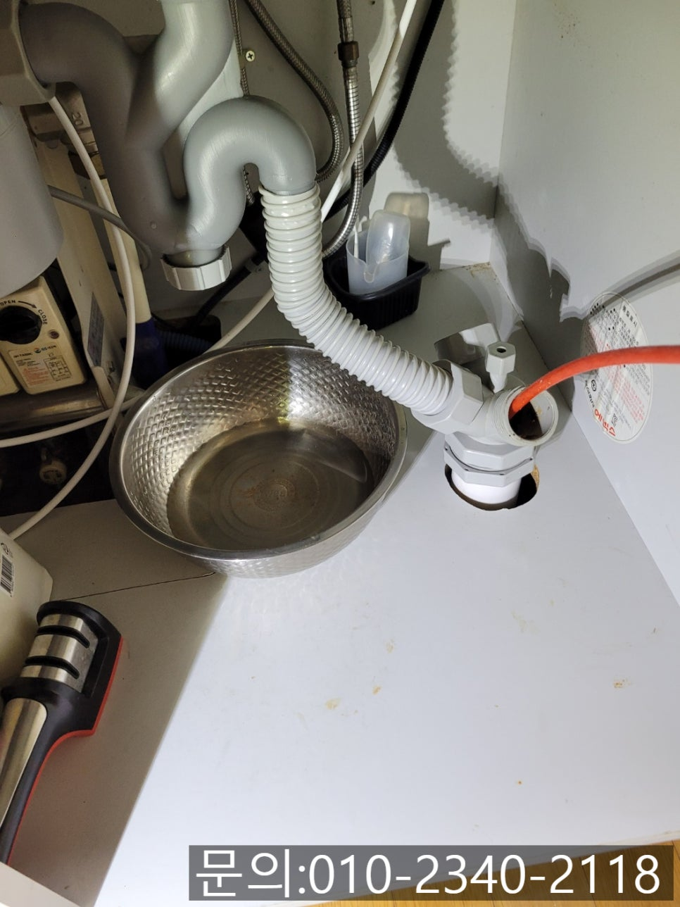
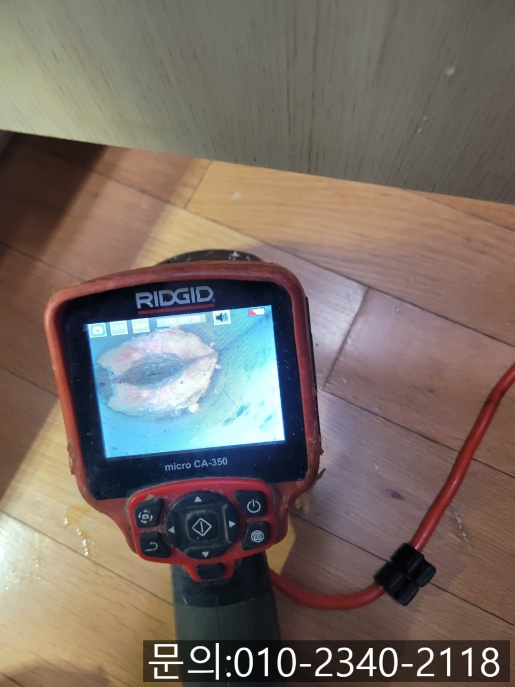
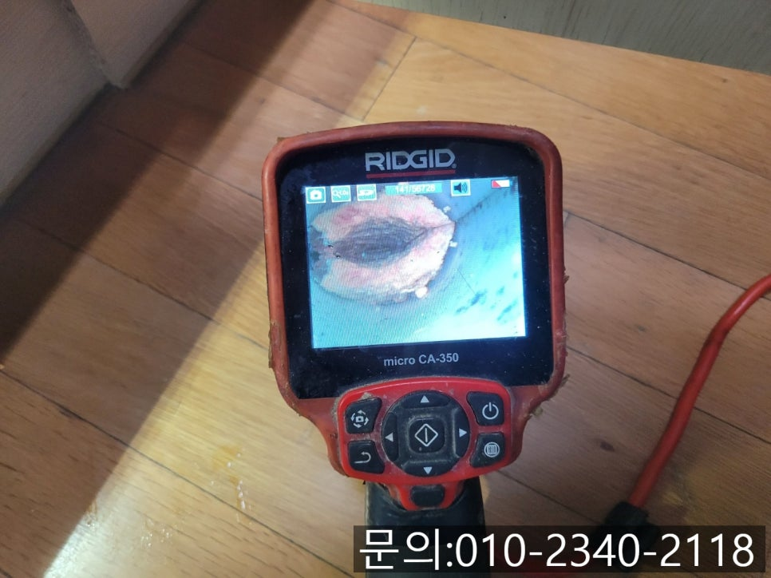
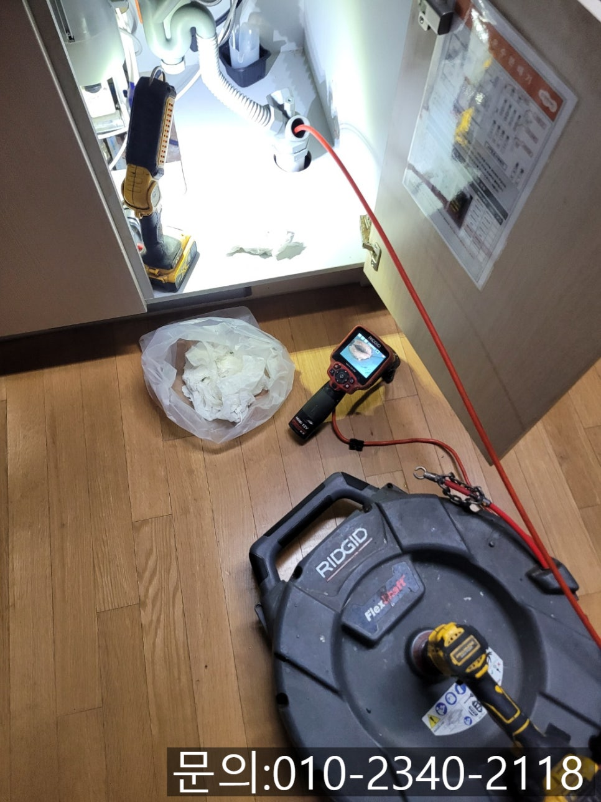
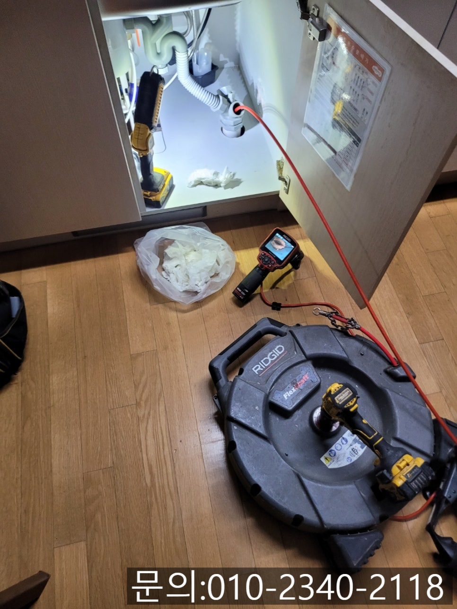
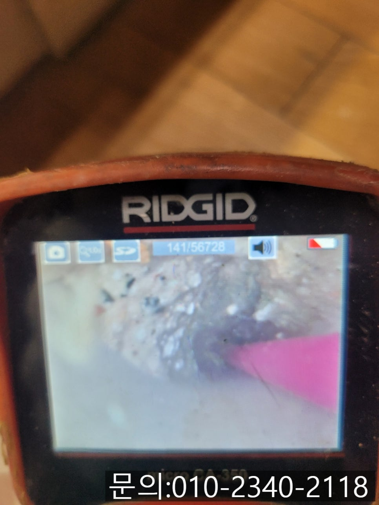

🏠 송정동 싱크대 막힘 광주 중대동 하수구 역류 뚫어주는 설비 업체
광주 송정동 싱크대막힘 전문 시공 후기

📋 작업 개요
- 위치: 광주 송정동, 송정동, 광주
- 서비스 유형: 싱크대막힘, 하수구막힘, 배관막힘, 역류해결, 뚫는업체, 배관청소, 고압세척
- 작업 일시: 2025. 4. 20. 20:08
- 업체명: 하수구수사대 (010-5615-2118)
🔍 문제 상황
안녕하세요.
송정동 싱크대 막힘, 광주 중대동 하수구 역류 뚫어주는 설비 업체 하수구 다큐입니다.
송정동 싱크대 막힘이 발생하게 되면 해결하는 데 드는 비용이 얼마인지 가장 궁금하실 거예요.
송정동 싱크대 막힘이 발생했을 때 고객님들께 전화를 받고 대략적인 금액을 말씀드리지만 정확한 금액을 알고 싶다는 분들이 대부분이죠.
광주 중대동 하수구 역류 뚫어주는 설비 업체 하수구 다큐도 정확한 금액을 말씀드리고 싶지만 현장마다 막힘의 정도, 막힌 이유가 모두 다르기 때문에 직접 현장을 방문해 확인해 봐야 말씀드릴 수 있다고 안내해 드리고 있습니다.
유선상으로 얼마의 금액이 발생될 거라고 말씀드렸다가 작업을 진행하는 도중에 변수가 생겨 금액이 추가되면 서로 불편해지기 때문이에요.

🔎 원인 분석
💡 전문가 진단: 정밀 진단 장비를 사용하여 슬러지의 고착 여부를 판명하고 타격/세척 작업을 실시했습니다.
고객님 역시 생각했던 금액보다 많이 나오면 부담스러울 수 있어 현장에서 정확하게 원인을 파악하고 정확한 금액을 안내해 드린 다음 고객님께서 타당하다고 생각하신다면 그때 작업에 착수하고 있습니다.
오늘은 송정동 싱크대 막힘으로 무료 견적을 진행해 드리고 작업까지 완벽하게 끝내고 온 현장을 소개해 드리겠습니다.
경기 광주에 위치한 가정집에서 주방의 싱크대에서 사용한 물이 배수되지 않는다는 연락을 받았습니다.
장비들을 챙겨 현장에 도착해 보니 물이 개수대에 고여있는데 배수구 아래쪽 어딘가가 꽉 막힌 건지 조금도 흘러가지 않는 상태였어요.
이렇게 배수가 안될 정도였다면 그동안 요리하거나 식기를 세척하실 때마다 불편하셨을 것 같습니다.
광주 중대동 하수구 역류 뚫어주는 설비 업체 하수구 다큐는 문제를 신속하게 해결해 드리기 위해 역류한 물을 제거하고 내시경 카메라로 원인을 찾기로 했어요.

🔧 작업 과정
하수구 배관의 경우도 사람의 장기처럼 눈으로 직접 확인해 볼 수 없다 보니 내시경 카메라를 진입시켜 막힘의 원인을 찾아야 하는데요.
내시경 카메라가 배관 내부로 진입하자 커다란 기름 슬러지 덩어리를 확인할 수 있었습니다.
광주 중대동 하수구 역류 뚫어주는 설비 업체 하수구 다큐는 막힘의 원인을 파악하고 고객님께 발생되는 비용에 대해 안내해 드린 다음 작업을 진행하기로 했어요.
배관을 막고 있는 기름 슬러지를 제거하기 위해 플렉스 샤프트 장비를 사용하기로 했습니다.
플렉스 샤프트 장비는 노즐 끝에 달린 체인이 배관 내부에서 360도로 회전하면서 기름 슬러지를 잘게 부서 주는 역할을 합니다.
잘게 갈린 기름 슬러지는 물과 함께 흘려보내거나 석션을 사용해 빨아드려 완벽하게 제거하는 작업을 반복해서 진행하게 됩니다.
워낙 많은 양의 기름 슬러지가 쌓여있던 터라 한두 번의 작업으로는 모두 제거되지 않아 반복해서 작업을 진행해 줬어요.
내시경 카메라를 이용해 꼼꼼하게 배관 내부를 확인해가며 플렉스 샤프트로 배관을 막고 있는 이물질을 제거하는 작업을 진행해가자 조금씩 깨끗해지는 내부를 확인할 수 있었습니다.
내시경으로 잔여 이물질을 꼼꼼하게 확인하며 청소를 진행한 끝에 깨끗해진 배관 내부를 확인할 수 있었습니다.


✅ 작업 완료
마지막으로 많은 양의 물을 흘려보내 이상은 없는지 통수 테스트도 진행해 드렸고요.
아무런 이상 없는 것을 확인하고 작업을 마무리할 수 있었습니다.
경기도 용인시 수지구 풍덕천로129번길 9 5층 590호




⚠️ 주방 싱크대 배관 막힘 예방 수칙
- ✅ 기름기가 묻은 식기나 프라이팬은 설거지 전 키친타올로 반드시 기름때를 닦아내세요.
- ✅ 주기적으로 싱크대 개수대에 뜨거운 물을 가득 받아 한 번에 내려 배관 내부 기름을 씻어내세요.
- ✅ 배수구 거름망을 미세한 필터로 사용하시고 음식물 찌꺼기가 틈으로 새어 들지 않게 관리하세요.
- ✅ 베이킹소다와 식초를 뜨거운 물과 함께 일주일에 한 번씩 부어주면 배관 살균과 막힘 예방에 좋습니다.
💡 핵심 정리
- 확실한 장비 작업(내시경 점검 및 샤프트 스케일링)으로 원인을 뿌리 뽑습니다.
- 작업 후 1년 이내에 동일한 부위 재발 시 100% 무상 A/S 서비스를 보장합니다.
- 서울 · 경기 · 인천 전 지역에 24시간 언제든 긴급 출동할 수 있도록 항시 대기 중입니다.
❓ 자주 묻는 질문 (FAQ)
🚨 광주 송정동 싱크대막힘 문제로 고민이신가요?
정확한 원인 진단과 확실한 시공으로 재발 없는 해결을 약속드립니다.
24시간 긴급 출동 | 서울 · 경기 · 인천 전지역 | 1년 내 재발 시 무상 A/S